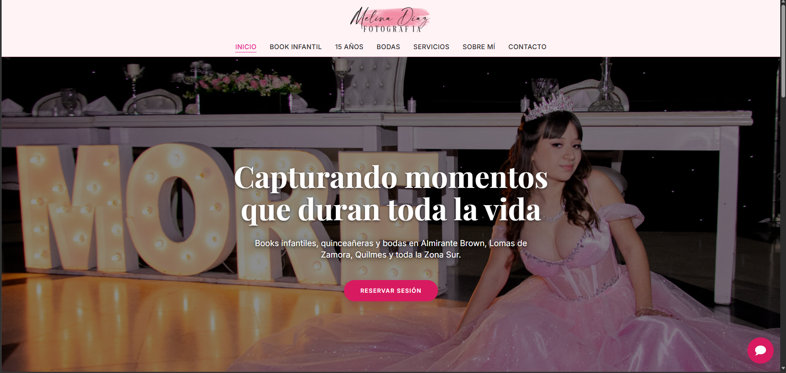

Proyecto Principal

Melina Diaz Fotografía
Portfolio profesional actualmente en producción. Diseñado con una interfaz limpia e inmersiva para exhibición visual, respaldado por una arquitectura serverless que garantiza velocidad y alta disponibilidad.